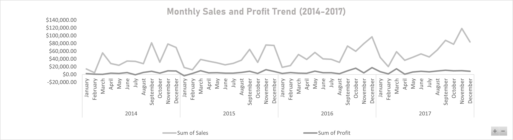

Impact-First Data Analyst | Helping Businesses Identify Losses, Optimize Products & Build Data Solutions That Deliver Real Results
I’m a data analyst with a background in Statistics, where I built a strong analytical foundation that naturally led me into data analysis as the next logical step. I’m driven by an impact-first approach, asking the right business and organizational questions to uncover what’s driving losses, where opportunities exist, and how data can deliver measurable outcomes. My work focuses on turning insights into practical, repeatable solutions that help teams make better decisions and create real value.
I’m actively building adaptable data solutions designed to evolve with today’s growing business landscapes. Beyond technical tools, I’m intentionally developing the ability to identify real business pain points, filter out the noise, and deeply understand the challenges facing businesses, clients and stakeholders before diving into the data. I’m particularly building toward analyst roles within traditional business landscapes, fintech, finance, research, and the application of artificial intelligence in modern analytics.

Key finding: Several high-revenue products were quietly driving losses due to aggressive discounting, revealing reduced profit margins and a clear opportunity for strategic pricing adjustments.
I analyzed the Superstore retail dataset (2014–2017), covering nearly 10,000 transactions across product categories, customer segments, regions, and discount levels. My goal was to determine which areas truly drive profitability and where the business is losing money, particularly how discount strategies impact overall profit.
Technologies and tools I work with:
Interested in working together or have questions about my analysis?